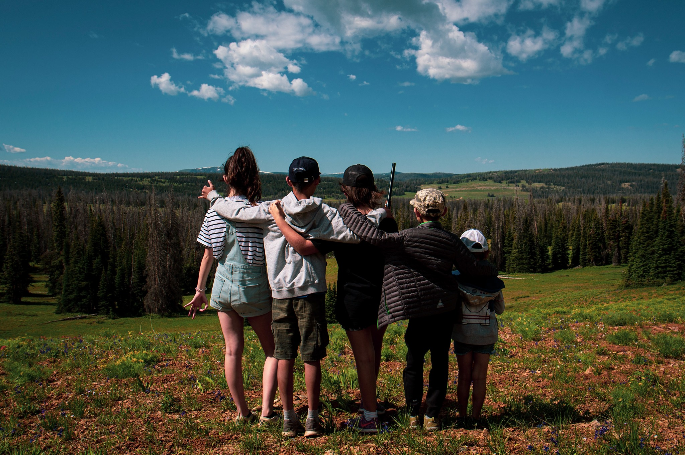
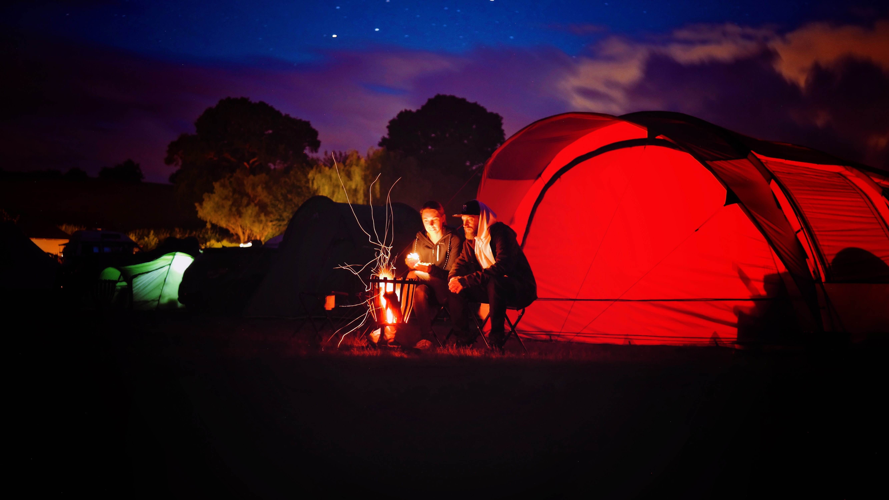
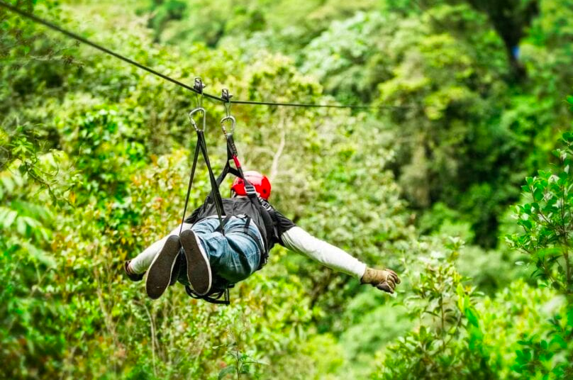
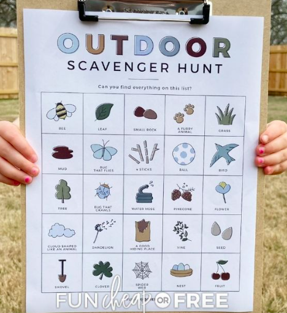

Sitting around a bonfire with families is a favorite activity. Listening to stories, reminiscing about our childhood while roasting mashmellows brings everyone peace and joy.
When you feel adventurous, ziplining will give you an experience of a lifetime. Sitting securely up in the air as you slide through the tree line, you can enjoy the view from uptop and feel the wind in your hair.
As for the little ones, there will be a scavenger hunt with fun surprises and sweets to the taste. Little ones can explore the surroundings, learn about nature, and find healthy treats along the way.
